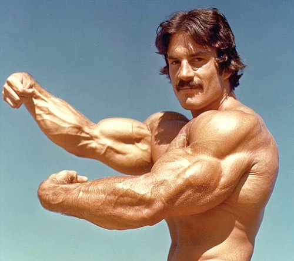
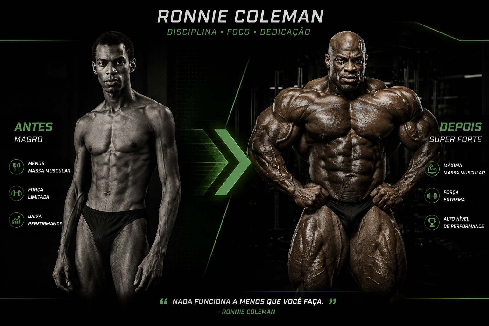

Hipertrofia
A hipertrofia muscular é o processo de aumento do tamanho e do volume dos músculos, que ocorre principalmente
como resposta ao treinamento de força, como a musculação. Durante os exercícios, os músculos são submetidos
a uma sobrecarga que estimula o organismo a se adaptar.
Para que a hipertrofia aconteça, é importante haver treinamento adequado, alimentação equilibrada e
descanso suficiente. Após o exercício, o corpo realiza processos de recuperação e adaptação das fibras
musculares, tornando os músculos maiores e mais preparados para suportar novos estímulos.

Volume de treino e Hipertrofia..
As séries semanais representam uma forma de medir o volume de treinamento realizado para cada grupo muscular.
Para a hipertrofia, é importante que o músculo receba uma quantidade adequada de estímulo ao longo da
semana.
De maneira geral, realizar aproximadamente 10 a 20 séries por grupo muscular por semana pode ser
uma faixa adequada para muitas pessoas que buscam hipertrofia. Entretanto, essa quantidade pode variar de
acordo com o nível de treinamento, capacidade de recuperação, intensidade dos exercícios e objetivo
individual.
Conforme a pessoa evolui, o volume pode ser ajustado de acordo com sua recuperação e resultados.
Mais séries não significam necessariamente mais crescimento muscular. Existe um ponto em que aumentar o
volume pode trazer poucos benefícios adicionais e aumentar a fadiga. Por isso, é importante encontrar uma
quantidade de séries que proporcione estímulo suficiente sem prejudicar a recuperação.
• Resumo: Para a hipertrofia, o mais importante é combinar volume adequado, intensidade, progressão
de carga, alimentação e descanso, mantendo uma rotina consistente de treinamento.

Melhores Exercícios
| Grupo muscular | Exercícios |
|---|---|
| Peito | Supino reto, Supino inclinado, Crucifixo |
| Costas | Puxada aberta e fechada, Remada aberta e fechada, Pulldown |
| Ombros | Desenvolvimento, Elevação lateral |
| Bíceps | Rosca direta, Rosca inclinada |
| Tríceps | Tríceps na polia, Extensão acima da cabeça, Supino fechado |
| Quadríceps | Agachamento, Leg press, Cadeira extensora |
| Posteriores de coxa | Stiff, Mesa flexora, Cadeira flexora |
| Glúteos | Agachamento, Hip thrust, Afundo |
| Panturrilhas | Elevação de panturrilha em pé, Elevação sentado |